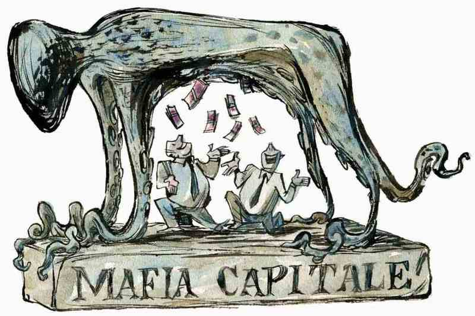

Introduzione
Mafia Capitale, denominata anche operazione Mondo di Mezzo, è un termine giornalistico volto a definire la collusione tra funzionari della pubblica amministrazione
e diverse società/aziende riconducibili a Massimo Carminati e Salvatore Buzzi nella città di Roma. Tuttavia nel 2020 la Corte suprema di cassazione italiana ha escluso
il carattere mafioso degli atti criminali,nonostante un'iniziale conferma nel 2015.
Storia
La presenza di alcune organizzazioni criminali a Roma fu denunciata inizialmente nel dicembre 2012 tramite un articolo di L'Espresso, scritto da Lirio Abbate,
in cui si ricostruiva la spartizione della capitale tra diversi gruppi criminali facenti capo principalmente a Massimo Carminati, detto "Er Cecato", ex terrorista
dei NAR nonché affiliato della Banda della Magliana. Delle intercettazioni portarono all'arresto, il 2 dicembre 2014, di 28 indagati tra cui: Carminati stesso, Salvatore Buzzi, Riccardo Mancini (ex amministratore delegato di EUR S.p.A.)
, anche l'ex sindaco di Roma Gianni Alemanno, successivamente condannato a 6 anni di reclusione per corruzione
e finanziamento illecito.
Accuse
Tra i reati ipotizzati dalla procura della Repubblica di Roma, guidata dal magistrato Giuseppe Pignatone, figurarono corruzione,
estorsione, usura, riciclaggio di denaro e associazione di tipo mafioso nell'ambito di presunte infiltrazioni nel tessuto istituzionale
ed imprenditoriale raffigurato dall'assegnazione illecita di appalti e finanziamenti pubblici da parte di Roma Capitale e delle sue aziende
municipalizzate. Gli interessi principali si sono registrati nella gestione dei centri di accoglienza degli immigrati e della raccolta
differenziata.
Nel giugno 2015 sono stati effettuati altri 44 arresti tra gli uffici amministrativi di comune e regione e in alcune cooperative con accuse
di: associazione di tipo mafioso, corruzione, turbativa d'asta, false fatturazioni e trasferimento fraudolento di valori.
Il processo
L'11 agosto 2015 le indagini vengono chiuse e il gip autorizza il processo con rito immediato per Buzzi, Carminati e altri indagati.
Alcuni fanno il rito abbreviato(si ha diritto ad uno sconto secco della pena, pari a un terzo della stessa), altri
patteggiano(si beneficia di una riduzione che può andare al massimo fino a un terzo, ma che potrebbe anche essere inferiore).
Due giorni dopo inizia il maxiprocesso con 46 imputati.
Il 7 febbraio 2017 il gip Costantini archivia 113 posizioni di indagati per non aver trovato "elementi idonei a sostenere l'accusa"; tra di loro il Governatore
del Lazio Nicola Zingaretti, indagato per concorso in corruzione e non solo.
Nel mese di aprile, sentiti gli ultimi testimoni, il processo si chiude e tra le richieste della Procura spiccano i 28 anni per Carminati, i 26 per Buzzi.
A 19 dei 46 imputati, tra cui Carminati e Buzzi, la Procura contesta l'associazione di stampo mafioso e la stessa chiede che
Carminati venga dichiarato "delinquente abituale" e che, a condanna scontata, vada per 2 anni in una colonia agricola o in una casa di lavoro.